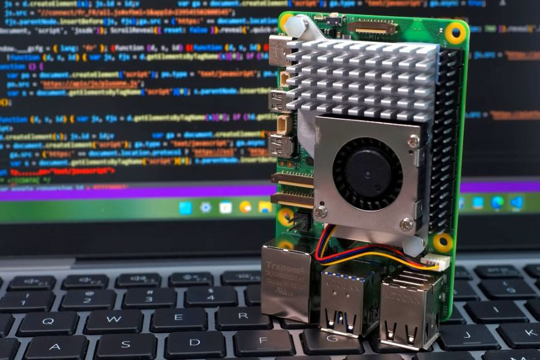
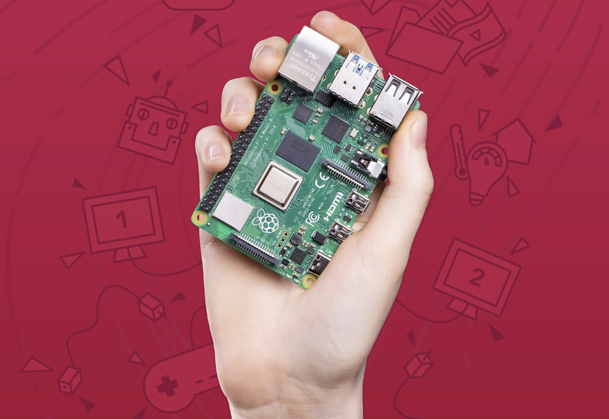
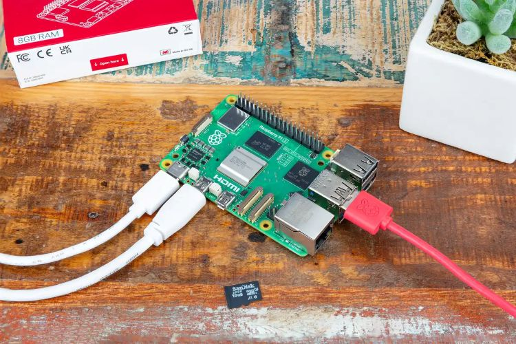
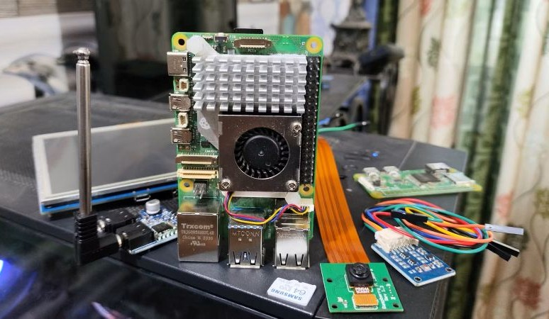
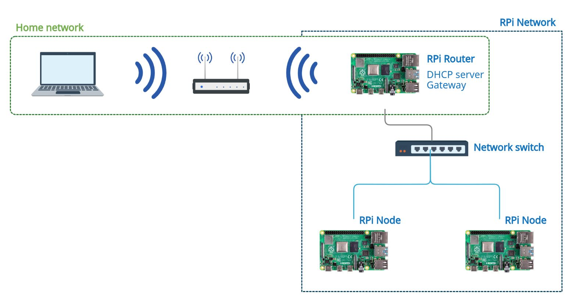

Build Your First Python Project
Learn how to use Python on a Raspberry Pi by creating a simple beginner-friendly program.

Learn the basics, explore project ideas, and start building with one of the world's most popular single-board computers.
Explore ProjectsRaspberry Pi computers are small, affordable computers designed to make computing, programming, and electronics accessible to people of all experience levels.
Despite their small size, Raspberry Pi computers can be used for many practical and creative projects. You can learn programming, build a home server, experiment with electronics, automate devices, create media systems, and much more.
Raspberry Pi Project Hub is designed to help beginners understand the basics and discover projects they can start building.

Explore beginner-friendly Raspberry Pi projects and discover practical ways to learn programming, electronics, and networking.

Learn how to use Python on a Raspberry Pi by creating a simple beginner-friendly program.

Explore Raspberry Pi GPIO pins by connecting LEDs, sensors, and other electronic components.

Turn a Raspberry Pi into a small home server and learn the fundamentals of networking.
Find out what hardware and software you need and learn the basic steps for preparing your Raspberry Pi for its first project.
Getting Started